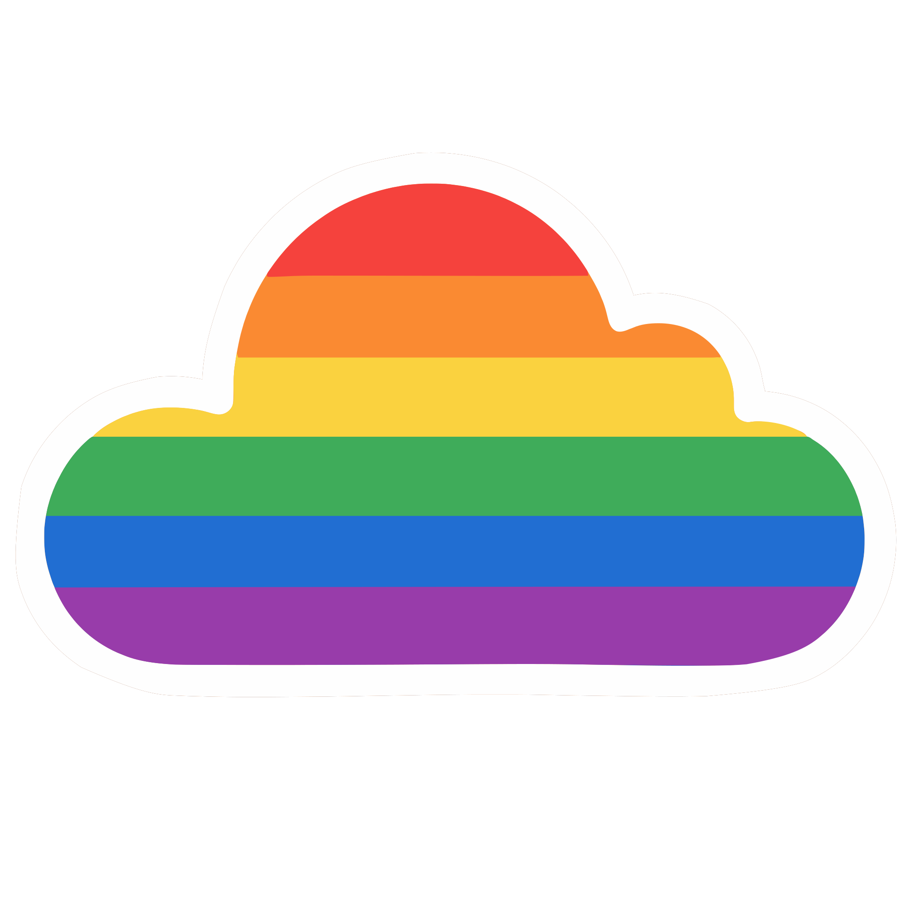

 云彩配色 Pro
主色:
风格主题:
现代简约
自然清新
优雅经典
活力鲜艳
复古怀旧
科技感
探索
保存
主题
专业色彩管理
主色系统
辅助色系统
强调色系统
中性色系统
主色:
#81B9E9
风格主题:
现代简约
选中方案:
未选择
生成时间:
-
选择主色
×
色相 (H):
0°
饱和度 (S):
100%
明度 (L):
50%
确认
取消
选择保存格式
×
保存到本地
保存到浏览器本地存储
导出为CSS
下载CSS文件
导出为JSON
下载JSON文件
导出为TXT
下载文本文件